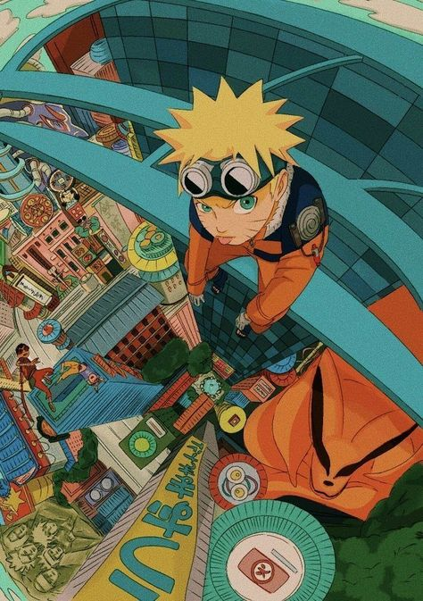

The Journey of a Lifetime
Naruto, a manga and anime series crafted by Masashi Kishimoto, has captivated millions with its rich storytelling and complex characters. Explore Naruto's arduous journey from an outcast to the leader of his village.
Exploring Key Story Arcs
- Early Life and Struggle
- Naruto's origins and his struggles for acceptance within the Hidden Leaf Village set the stage for his future ambitions and relationships.
- Formation of Team 7
- Detail the dynamics and significance of Team 7, comprising Naruto, Sasuke, and Sakura under the guidance of Kakashi.
- Chunin Exams
- The Chunin Exams arc, where rivalries are tested and abilities pushed to the limit, is a turning point for many characters.
- Conflict with the Akatsuki
- An in-depth look into the Akatsuki's impact on Naruto's life and the broader ninja world.
Character Evolution and Growth
Examine how key characters evolve throughout the series, highlighting Naruto's development, Sasuke's conflicts, and Sakura's growth into a medical ninja.
Themes and Symbolism
Annalyzing major themes such as friendship, rivalry, and the concept of legacy. Discussing how these themes resonate across different arcs.
Learn More
Naruto on VIZ MediaVisual Journey